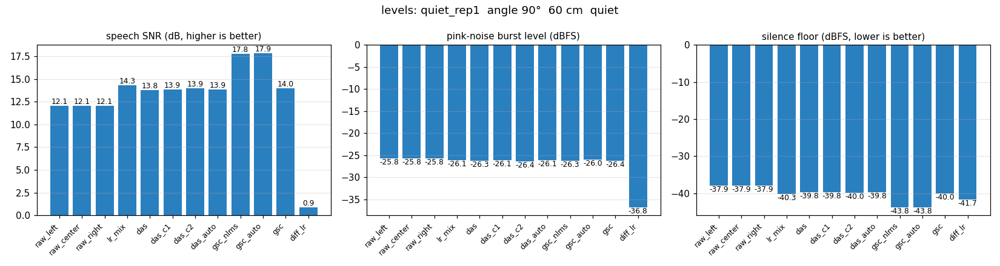
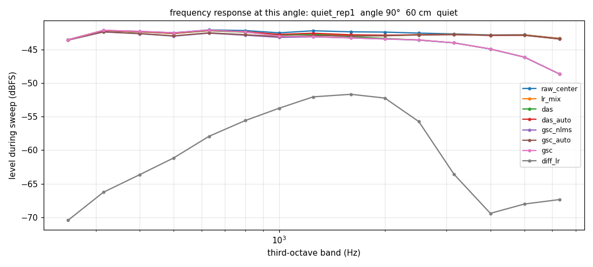
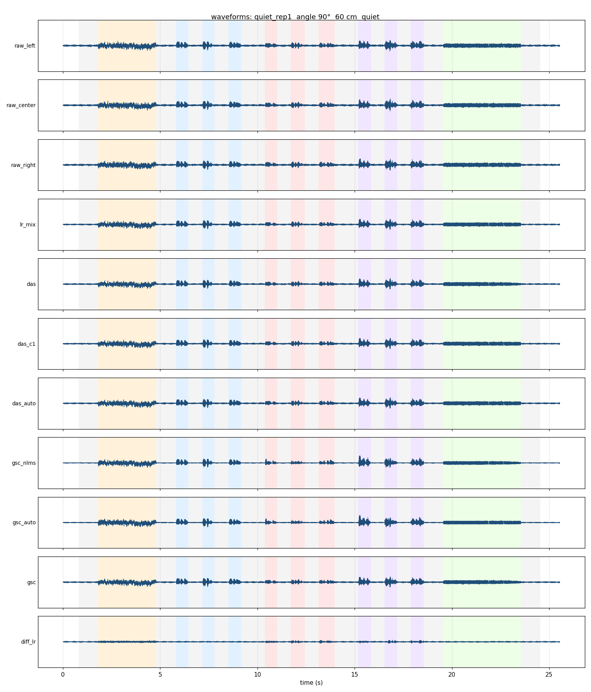
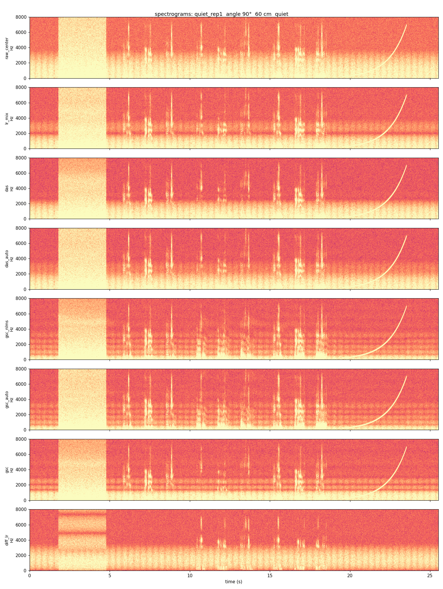

angle 90°, 60 cm, quiet, 25.55 s. Clip offset 0.8 s (confidence 0.942).
Microphones hear the source at +0° (L-R delay 0.0 samples, peak 7.3).
| path | rms_dbfs | speech_snr_db | noise_level_dbfs | silence_floor_dbfs | interf_rejection_db | interf_rejection_lf_db | snr_under_interference_db | speech_preservation | peak | clips |
|---|---|---|---|---|---|---|---|---|---|---|
| raw_left | -29.66 | 12.07 | -25.76 | -37.92 | 0.03 | -0.02 | 2.53 | 0.9748 | 8996 | 0 |
| raw_center | -29.64 | 12.06 | -25.77 | -37.89 | 0.0 | 0.0 | 2.62 | 0.9768 | 8978 | 0 |
| raw_right | -29.63 | 12.06 | -25.77 | -37.91 | -0.03 | -0.05 | 2.69 | 0.9746 | 8651 | 0 |
| lr_mix | -30.1 | 14.3 | -26.12 | -40.26 | 1.04 | 1.81 | 3.64 | 0.994 | 8312 | 0 |
| das | -30.29 | 13.76 | -26.33 | -39.75 | 0.88 | 1.17 | 3.4 | 8045 | 0 | |
| das_c1 | -30.05 | 13.86 | -26.14 | -39.81 | 0.88 | 1.23 | 3.47 | 0.9935 | 8282 | 0 |
| das_c2 | -30.38 | 13.95 | -26.37 | -39.98 | 0.89 | 1.41 | 3.38 | 0.9824 | 8221 | 0 |
| das_auto | -30.05 | 13.86 | -26.14 | -39.81 | 0.88 | 1.23 | 3.47 | 0.9935 | 8282 | 0 |
| gsc_auto | -30.15 | 17.85 | -26.01 | -43.8 | 1.78 | 2.95 | 5.4 | 0.976 | 9854 | 0 |
| diff_lr | -39.7 | 0.87 | -36.83 | -41.69 | 6.73 | 5.65 | -12.74 | 0.0056 | 2767 | 0 |
| gsc | -30.41 | 14.01 | -26.35 | -40.0 | 1.58 | 2.13 | 4.02 | 0.994 | 7680 | 0 |
| gsc_nlms | -30.42 | 17.78 | -26.32 | -43.81 | 1.72 | 2.78 | 5.32 | 0.9816 | 9674 | 0 |



